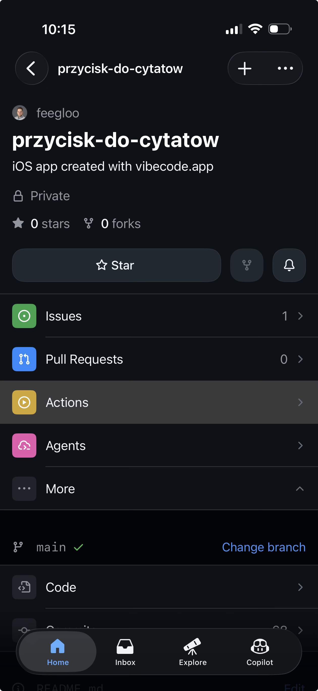
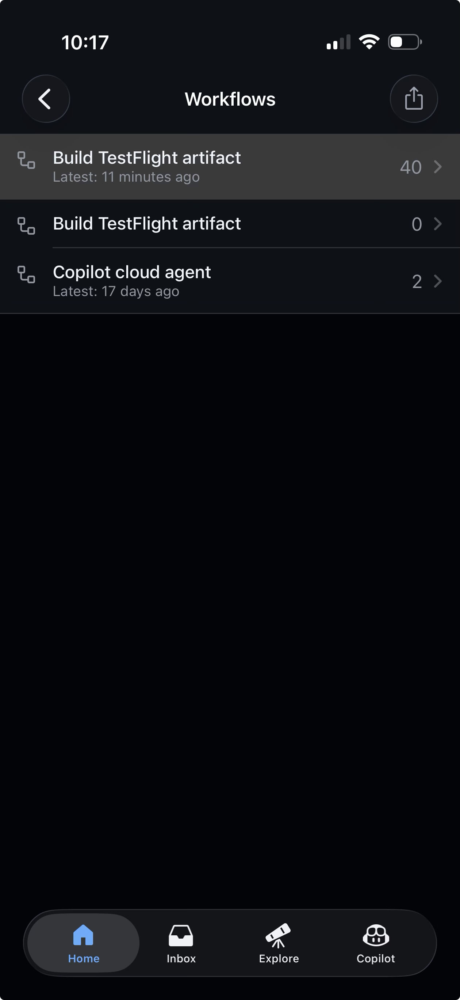
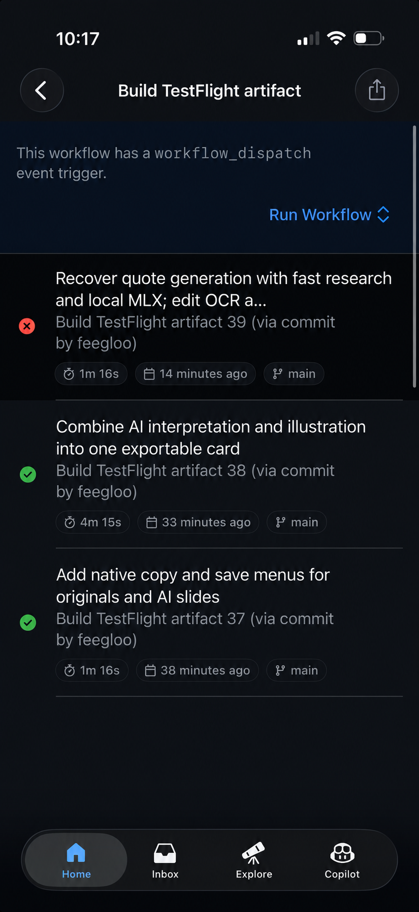
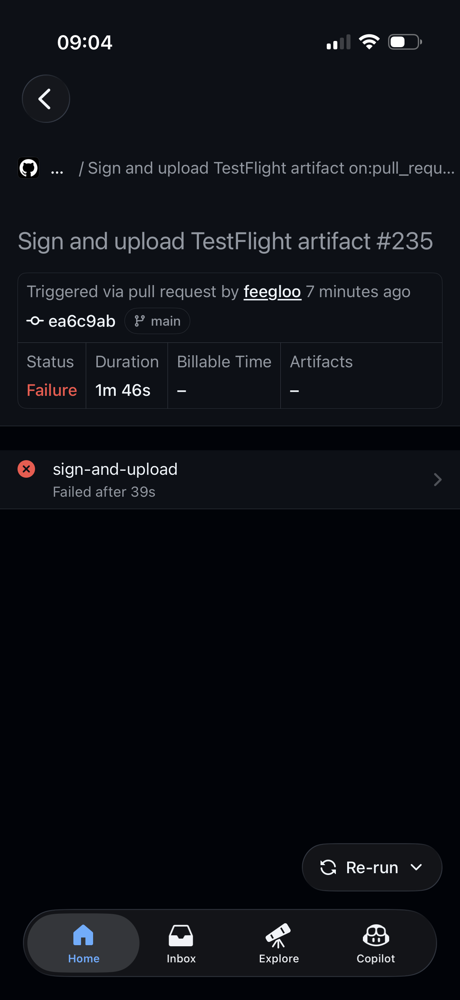
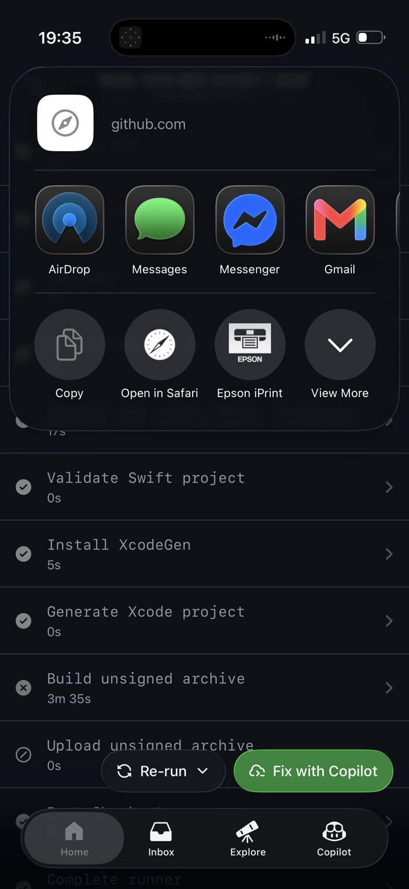
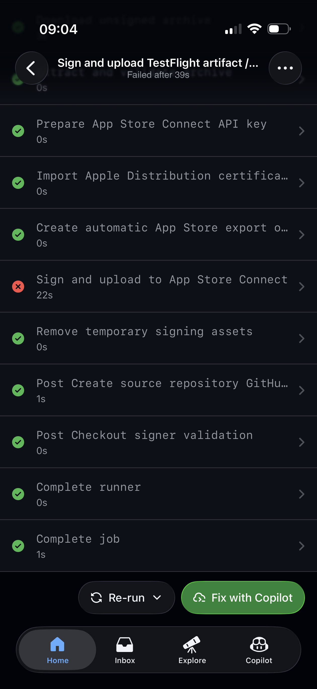
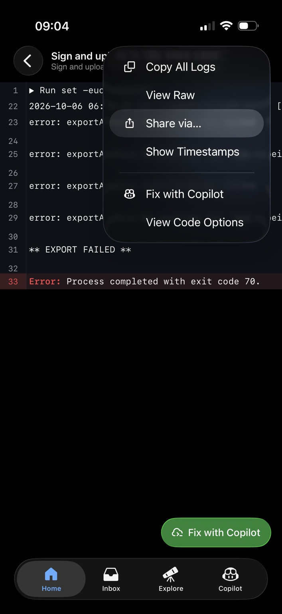
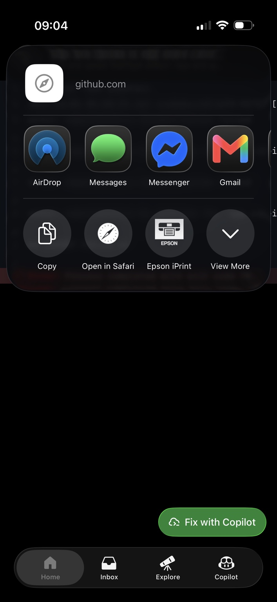
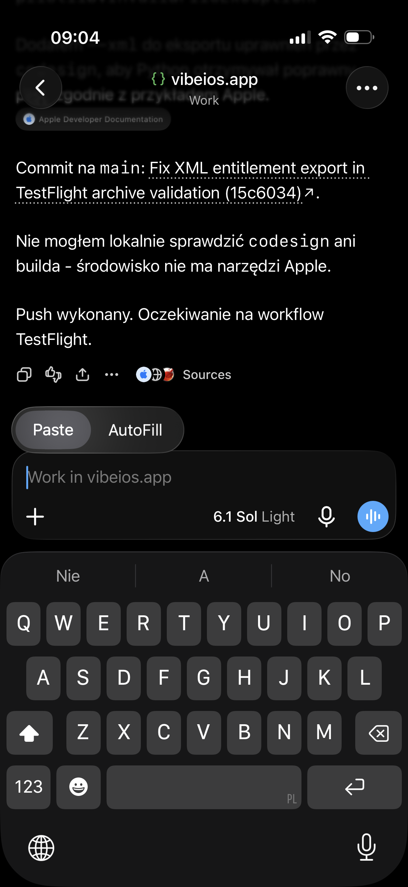
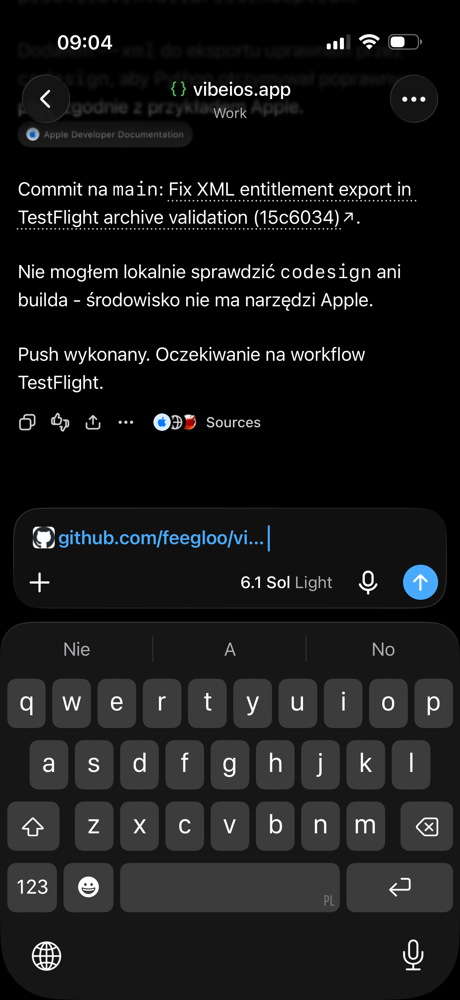

GitHub Actions + ChatGPT
Naprawa workflow z AI.
Workflow zakończył się błędem? Skopiuj link do nieudanego uruchomienia lub joba i wklej go do ChatGPT. Możesz też wejść głębiej i wskazać konkretny krok z błędem. Asystent z dostępem do GitHub może sprawdzić przyczynę i poprawić kod.
Otwórz rozmowę z dostępem do repozytorium przez połączenie GitHub. Dla prywatnego repo sam link nie daje dostępu. Jeśli asystent nie może odczytać logów, wklej je przez Copy All Logs albo dołącz screenshot.
Otwórz repozytorium i wybierz Actions
Otwórz aplikację GitHub i przejdź do repozytorium swojej aplikacji. Na jego głównym ekranie naciśnij Actions. To tutaj znajdziesz automatyczne zadania, które budują i publikują aplikację.


Wybierz workflow swojej aplikacji
Na ekranie Workflows wybierz zadanie, którego błąd chcesz sprawdzić. W tym przykładzie jest to Build TestFlight artifact, czyli workflow budujący aplikację do TestFlight. Pod nazwą widać, kiedy został ostatnio uruchomiony.


Znajdź nieudane uruchomienie
Każdy wpis na tej liście to osobne uruchomienie workflow. Znajdź wpis z czerwonym krzyżykiem i naciśnij go. Zielony znacznik oznacza, że dane uruchomienie zakończyło się poprawnie. Run Workflow uruchamia nowe zadanie, więc nie potrzebujesz tego przycisku, aby odczytać istniejący błąd.


Otwórz nieudany workflow
Po wybraniu czerwonego wpisu otworzysz szczegóły nieudanego uruchomienia. Znajdź job oznaczony statusem Failure i otwórz go, aby przejść do listy kroków.
Kolejne screeny pokazują inny przykład błędu z tego samego procesu publikacji: nie powiodło się Sign and upload TestFlight artifact. Naciśnij job sign-and-upload, aby zobaczyć jego kroki.


Udostępnij bez otwierania błędu
Możesz skopiować link już teraz. Na ekranie wybranego uruchomienia użyj udostępniania. Jeśli widzisz listę kroków joba, jak na screenie poniżej, otwórz menu ⋯ i wybierz Share. Nie musisz rozwijać czerwonego kroku ani szukać konkretnej linii logu.
Agent AI z dostępem do repozytorium może sam odszukać nieudany job, pobrać jego logi i znaleźć przyczynę. Udostępniasz link do tego uruchomienia lub joba, a nie plik z definicją workflow ani całą treść logów.

Skopiuj link i przejdź do ChatGPT
W oknie udostępniania naciśnij Copy. Następnie przejdź do wklejenia linku w ChatGPT i napisz: „Sprawdź logi i napraw ten workflow”. To wystarczy, jeśli agent ma dostęp do repozytorium i logów.
Chcesz wskazać dokładny błąd? Kontynuuj kolejne kroki tutoriala: otwórz czerwony krok i skopiuj bardziej szczegółowy link. Obie ścieżki prowadzą do tego samego celu.


Opcjonalnie: znajdź konkretny krok z błędem
Otwórz krok oznaczony czerwonym krzyżykiem. Tutaj jest to Sign and upload to App Store Connect. Pozostałe kroki mogły zakończyć się poprawnie.
Link do konkretnego joba lub kroku ułatwia dotarcie do właściwego logu. Nie musisz samodzielnie interpretować wszystkich komunikatów.


Otwórz udostępnianie
Na ekranie logów w aplikacji GitHub otwórz menu ⋯ i wybierz Share via….
To udostępnianie adresu strony. Opcja Copy All Logs kopiuje treść logów i przydaje się, gdy ChatGPT nie ma do nich dostępu.


Skopiuj link
W systemowym oknie udostępniania naciśnij Copy. Link trafi do schowka.
Jeśli korzystasz z GitHub w przeglądarce, skopiuj adres z paska po otwarciu właściwego joba. Link może kończyć się fragmentem #step:13:1, wskazującym konkretny krok i linię logu.


Wklej go do ChatGPT
Wróć do rozmowy, w której pracujesz nad aplikacją. Przytrzymaj pole wiadomości i wybierz Paste. Zachowasz kontekst wcześniejszych zmian.
W nowej rozmowie dopisz, czego dotyczy repozytorium i co ostatnio zmieniono. GitHub powinien być połączony z asystentem i mieć dostęp do tego repo.


Wyślij i sprawdź poprawkę
Dodaj krótkie polecenie: „Sprawdź logi i napraw ten workflow”, a następnie wyślij wiadomość. W rozmowie, w której cel jest już jasny, możesz wkleić sam link.


Asystent powinien sprawdzić ten run, aktualny kod i ostatnie zmiany. Po poprawce poproś o link do commita i informację o wykonanych testach.
Jeśli inne workflow działają, dopisz to. Taki kontekst pomaga porównać działające podpisywanie z błędnym zamiast od razu zmieniać klucze lub konfigurację konta.
Po zmianie kodu sprawdź nowe uruchomienie dla nowego commita. Re-run starego runa zwykle nadal korzysta ze starego kodu. Zielony build aplikacji nie oznacza jeszcze udanego podpisania i uploadu, a upload nie kończy przetwarzania przez Apple.
Screeny pokazują zgłoszenie błędu, nie dowód jego naprawienia. O wyniku decyduje nowy workflow i, dla zmian w aplikacji, sprawdzenie na urządzeniu.
Do skopiowania
Link + krótkie polecenie
Skopiuj prompt i zastąp nawias z instrukcją swoim linkiem.
Pokaż pełny prompt
Napraw błąd GitHub Actions z tego linku: [WKLEJ LINK DO NIEUDANEGO WORKFLOW, JOBA LUB KROKU] Sprawdź logi tego konkretnego uruchomienia, aktualny kod i ostatnie zmiany. Znajdź przyczynę błędu i zrób najmniejszą sensowną poprawkę w odpowiednim repozytorium. Przeczytaj jego AGENTS.md, README.md i dokumentację dotyczącą zmiany. Jeżeli inne aplikacje lub workflow podpisują się poprawnie, porównaj działający run z błędnym. Nie zakładaj problemu z kluczami tylko na podstawie „Authentication failed”. Uruchom dostępne testy. Po poprawce zrób jeden commit i push na main, jeśli zasady repozytorium na to pozwalają. Podaj link do commita, zakres zmiany i czego nie udało się zweryfikować. Sukces potwierdź dopiero na podstawie wyniku nowego uruchomienia. Jeśli nie masz dostępu do repozytorium lub logów, powiedz to i poproś o połączenie GitHub albo wklejenie logów. Nie zgaduj ich zawartości. Nie proś o ujawnienie sekretów.